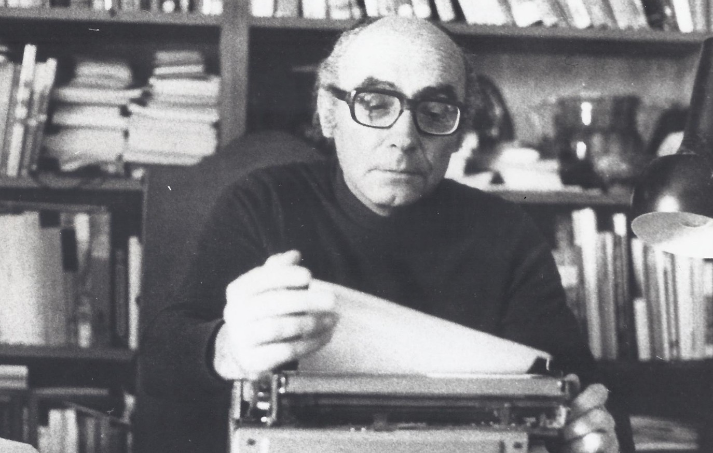

Biografia de José Saramago
- José Saramago (1922-2010) foi um importante escritor português. Destacou-se como romancista, teatrólogo, poeta e contista. Recebeu o Prêmio Nobel de Literatura o Prêmio Camões.. José Saramago nasceu em Azinhaga de Ribatejo, no concelho de Golegã, distrito de Santarém. Portugal, no dia 16 de novembro de 1922. Filho de camponeses com dois anos de idade mudou-se com a família para Lisboa.
José Saramago estudou em escola técnica onde concluiu o curso de serralheiro mecânico. Trabalhou como serralheiro, foi funcionário público na área da saúde e da Previdência Social. Autodidata, adquiriu grande cultura na literatura, filosofia e história.

Carreira Literária
- José Saramago estreou na literatura com o romance “Terra do Pecado” (1947). Foi diretor literário de uma editora, jornalista e tradutor. Colaborou com vários jornais e revistas, entre eles, o Diário de Lisboa, A Capital e a Seara Nova, onde exerceu a função de cronista. Sua trajetória literária passou por várias fases: A primeira, foi marcada pela poesia, com Os Poemas Possíveis (1966) e Provavelmente Alegria (1970), e pela crônica Deste Mundo e do Outro (1971). A partir do final dos anos 70 dedicou-se ao teatro, escreveu: A Noite (1979), peça que tem como cenário uma redação de um jornal na noite de 24 para 25 de abril de 1974.
Continuação da Carreira Literária
José Saramago desenvolveu uma espécie de historicismo fantástico onde sua imaginação, aliada a um ilimitado amor à vida, em cada minúcia da verdade humana ao longo do tempo, reelabora fatos da história de sua terra, como nas obras: Memorial do Convento (1982) O Ano da Morte de Ricardo Reis (1984) (Prêmio do Pen Clube Português, Prêmio da Crítica, Prêmio Dom Diniz e Prêmio do Jornal The Independente) etc ...

Obras de José Saramago
- Terra do Pecado, 1947
- Manual de Pintura e Caligrafia, 1977
- Levantado do Chão, 1980
- Memorial do Convento, 1982
- O Ano da Morte de Ricardo Reis, 1984
- Entre outras ...